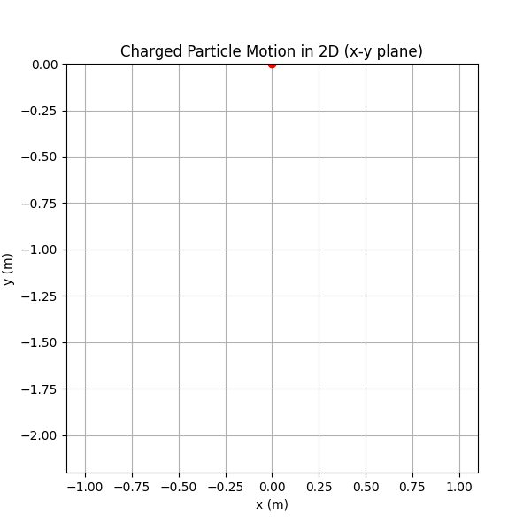
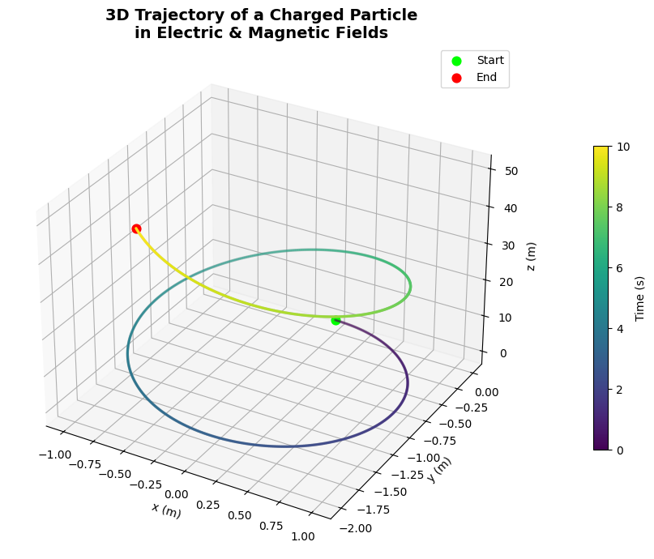

Simulating the Lorentz Force on a Charged Particle
📌 Introduction
The motion of a charged particle in electric and magnetic fields is governed by the Lorentz Force:
\[
\mathbf{F} = q(\mathbf{E} + \mathbf{v} \times \mathbf{B})
\]
This principle underpins key technologies such as:
- Cyclotrons
- Mass spectrometers
- Magnetic traps
- Plasma confinement in fusion reactors
⚙️ Physical Parameters
To generate meaningful macroscopic simulations, we use:
- Charge: \(q = 1\, \mathrm{C}\)
- Mass: \(m = 0.001\, \mathrm{kg}\) (i.e. \(1\, \mathrm{g}\))
- Time interval: suitable range for visible motion (e.g., \(10^{-3}\, \mathrm{s}\))
- Vector fields:
- Electric field \(\mathbf{E}\)
- Magnetic field \(\mathbf{B}\)
- Initial velocity \(\mathbf{v}_0\)
📐 Equations of Motion
We solve the following system of ODEs numerically:
Let \(\mathbf{r}\) be position, \(\mathbf{v}\) be velocity:
\[
\frac{d\mathbf{r}}{dt} = \mathbf{v}
\]
\[
\frac{d\mathbf{v}}{dt} = \frac{q}{m} \left( \mathbf{E} + \mathbf{v} \times \mathbf{B} \right)
\]
We integrate this using Python's solve_ivp() method.
🔭 Scenarios and Trajectories
We simulate three representative cases:
1️⃣ Circular Motion
- Fields:
- \(\mathbf{E} = \mathbf{0}\)
- \(\mathbf{B} = (0, 0, 1)\, \mathrm{T}\)
- Initial velocity: perpendicular to \(\mathbf{B}\)
Expected behavior: - Uniform circular motion in the \(xy\)-plane - Radius: Larmor radius
\[
R = \frac{mv}{qB}
\]
2️⃣ Helical (Spiral) Motion
- Fields:
- \(\mathbf{E} = \mathbf{0}\)
- \(\mathbf{B} = (0, 0, 1)\, \mathrm{T}\)
- Initial velocity: not fully perpendicular (has \(z\)-component)
Expected behavior: - Helical motion spiraling along \(\mathbf{B}\)-field - Constant axial drift along \(z\)
3️⃣ Crossed Fields Drift
- Fields:
- \(\mathbf{E} = (10, 0, 0)\, \mathrm{V/m}\)
- \(\mathbf{B} = (0, 0, 1)\, \mathrm{T}\)
- Initial velocity: arbitrary
Expected behavior: - Drift velocity:
\[
\mathbf{v}_d = \frac{\mathbf{E} \times \mathbf{B}}{B^2}
\]
- Trajectory shows sideways drift and possible curvature
🎨 Visualizations
For each scenario:



- ✅ 2D and 3D plots of trajectories
- ✅ Animation (GIF)
- ✅ Highlights:
- Larmor radius
- Direction of drift
- Spiral axis
- ✅ Color-coded motion paths with labeled axes and time markers
🧠 Observations
- The magnetic field introduces circular or spiral constraints
- Electric field induces linear acceleration or drift
- Field configurations can be designed to trap or accelerate particles
🧰 Code Implementation
import numpy as np
import matplotlib.pyplot as plt
from matplotlib.animation import FuncAnimation, PillowWriter
from scipy.integrate import solve_ivp
from IPython.display import Image, display
# Constants
q = 1.0 # Charge (C)
m = 1.0 # Mass (kg)
E = np.array([0.0, 0.0, 1.0]) # Electric field (V/m)
B = np.array([0.0, 0.0, 1.0]) # Magnetic field (T)
# Initial conditions
v0 = np.array([1.0, 0.0, 0.0])
r0 = np.array([0.0, 0.0, 0.0])
y0 = np.concatenate((r0, v0))
# Lorentz force function
def lorentz(t, y):
r = y[:3]
v = y[3:]
dvdt = (q / m) * (E + np.cross(v, B))
return np.concatenate((v, dvdt))
# Time settings
t_span = (0, 10)
t_eval = np.linspace(t_span[0], t_span[1], 500)
sol = solve_ivp(lorentz, t_span, y0, t_eval=t_eval)
x, y, z = sol.y[0], sol.y[1], sol.y[2]
# Set up the figure
fig, ax = plt.subplots(figsize=(6, 6))
ax.set_xlim(np.min(x)*1.1, np.max(x)*1.1)
ax.set_ylim(np.min(y)*1.1, np.max(y)*1.1)
ax.set_xlabel("x (m)")
ax.set_ylabel("y (m)")
ax.set_title("Charged Particle Motion in 2D (x-y plane)")
ax.grid(True)
line, = ax.plot([], [], lw=2, color='dodgerblue')
point, = ax.plot([], [], 'ro')
# Init function
def init():
line.set_data([], [])
point.set_data([], [])
return line, point
# Update function
def update(i):
if i < len(x): # Ensure index is valid
line.set_data(x[:i+1], y[:i+1])
point.set_data([x[i]], [y[i]]) # Use lists to ensure sequence
return line, point
return line, point
# Create animation
ani = FuncAnimation(fig, update, frames=len(x), init_func=init, blit=False, interval=20)
# Save to GIF with explicit writer settings
gif_path = "charged_particle_motion.gif"
writer = PillowWriter(fps=30)
ani.save(gif_path, writer=writer, dpi=100)
plt.close()
# Display the GIF in Colab
display(Image(filename=gif_path))
import numpy as np
import matplotlib.pyplot as plt
from scipy.integrate import solve_ivp
from mpl_toolkits.mplot3d import Axes3D
from matplotlib import cm
# Constants
q = 1.0
m = 1.0
E = np.array([0.0, 0.0, 1.0])
B = np.array([0.0, 0.0, 1.0])
# Initial conditions
v0 = np.array([1.0, 0.0, 0.0])
r0 = np.array([0.0, 0.0, 0.0])
y0 = np.concatenate((r0, v0))
# Lorentz force function
def lorentz(t, y):
r = y[:3]
v = y[3:]
dvdt = (q / m) * (E + np.cross(v, B))
return np.concatenate((v, dvdt))
# Solve system
t_span = (0, 10)
t_eval = np.linspace(*t_span, 1000)
sol = solve_ivp(lorentz, t_span, y0, t_eval=t_eval)
x, y, z = sol.y[0], sol.y[1], sol.y[2]
t = sol.t
# 3D Plot
fig = plt.figure(figsize=(10, 7))
ax = fig.add_subplot(111, projection='3d')
ax.plot(x, y, z, lw=2.5, c='gray', alpha=0.3)
scatter = ax.scatter(x, y, z, c=t, cmap='viridis', s=2)
ax.scatter(x[0], y[0], z[0], color='lime', label='Start', s=60)
ax.scatter(x[-1], y[-1], z[-1], color='red', label='End', s=60)
ax.set_xlabel('x (m)')
ax.set_ylabel('y (m)')
ax.set_zlabel('z (m)')
ax.set_title('3D Trajectory of a Charged Particle\nin Electric & Magnetic Fields', weight='bold', fontsize=14)
ax.legend()
fig.colorbar(scatter, ax=ax, label='Time (s)', shrink=0.6, pad=0.1)
plt.tight_layout()
plt.show()
import numpy as np
import matplotlib.pyplot as plt
from scipy.integrate import solve_ivp
from matplotlib.collections import LineCollection
# Constants
q = 1.0
m = 1.0
E = np.array([0.0, 0.0, 0.0])
B = np.array([0.0, 0.0, 1.0])
# Initial conditions
v0 = np.array([1.0, 0.0, 0.0])
r0 = np.array([0.0, 0.0, 0.0])
y0 = np.concatenate((r0, v0))
# Lorentz force function
def lorentz(t, y):
r = y[:3]
v = y[3:]
dvdt = (q / m) * (E + np.cross(v, B))
return np.concatenate((v, dvdt))
# Time array
t_span = (0, 10)
t_eval = np.linspace(*t_span, 500)
sol = solve_ivp(lorentz, t_span, y0, t_eval=t_eval)
x, y = sol.y[0], sol.y[1]
# Build color gradient segments
points = np.array([x, y]).T.reshape(-1, 1, 2)
segments = np.concatenate([points[:-1], points[1:]], axis=1)
norm = plt.Normalize(t_eval.min(), t_eval.max())
lc = LineCollection(segments, cmap='plasma', norm=norm)
lc.set_array(t_eval)
lc.set_linewidth(2.5)
# Plot
fig, ax = plt.subplots(figsize=(8, 6))
ax.add_collection(lc)
ax.scatter(x[0], y[0], color='lime', label='Start', zorder=5)
ax.scatter(x[-1], y[-1], color='red', label='End', zorder=5)
ax.set_xlabel('x (m)')
ax.set_ylabel('y (m)')
ax.set_title('Color Gradient Trajectory of Charged Particle', weight='bold')
ax.axis('equal')
ax.legend()
plt.colorbar(lc, ax=ax, label='Time (s)')
plt.tight_layout()
plt.show()